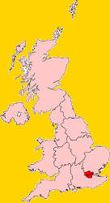
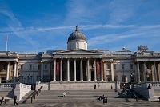
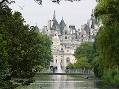
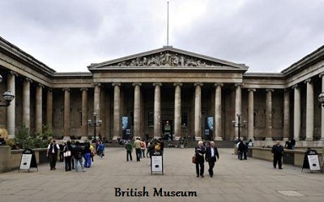
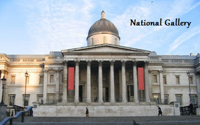
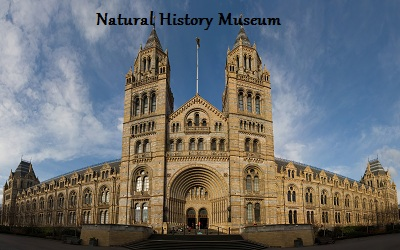
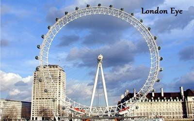
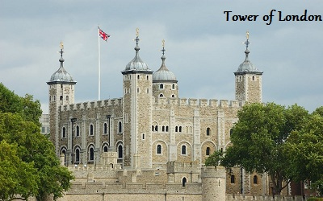
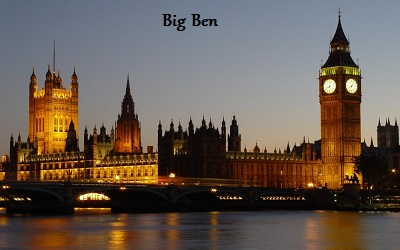
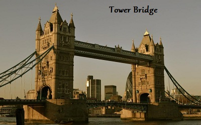

The United Kingdom of Great Britain and Northern Ireland
London
London is the capital of England and the United Kingdom, and the largest city, urban zone and metropolitan area in the United Kingdom, and the European Union by most measures. Located on the River Thames, London has been a major settlement for two millennia, its history going back to its founding by the Romans, who named it Londinium. London's ancient core, the City of London, largely retains its square-mile mediaeval boundaries. Since at least the 19th century, the name London has also referred to the metropolis developed around this core. The bulk of this conurbation forms the London region and the Greater London administrative area, governed by the elected Mayor of London and the London Assembly.
London is a leading global city, with strengths in the arts, commerce, education, entertainment, fashion, finance, healthcare, media, professional services, research and development, tourism and transport all contributing to its prominence. It is the world's leading financial centre alongside New York City and has the fifth- or sixth-largest metropolitan area GDP in the world depending on measurement. London has been described as a world cultural capital. It is the world's most-visited city as measured by international arrivals and has the world's largest city airport system measured by passenger traffic. London's 43 universities form the largest concentration of higher education in Europe. In 2012, London became the first city to host the modern Summer Olympic Games three times.
London has a diverse range of peoples and cultures, and more than 300 languages are spoken within its boundaries. In March 2011, London had an official population of 8,174,100, making it the most populous municipality in the European Union, and accounting for 12.5% of the UK population. The Greater London Urban Area is the second-largest in the EU with a population of 8,278,251, while the London metropolitan area is the largest in the EU with an estimated total population of between 12 million and 14 million. London had the largest population of any city in the world from around 1831 to 1925. The latest census reveals white Britons as minority in London for first time in modern times. London contains four World Heritage Sites: the Tower of London; Kew Gardens; the site comprising the Palace of Westminster, Westminster Abbey, and St Margaret's Church; and the historic settlement of Greenwich. Other famous landmarks include Buckingham Palace, the London Eye, Piccadilly Circus, St Paul's Cathedral, Tower Bridge, Trafalgar Square, and The Shard. London is home to numerous museums, galleries, libraries, sporting events and other cultural institutions, including the British Museum, National Gallery, Tate Modern, British Library and 40 West End theatres. The London Underground is the oldest underground railway network in the world and completed 150 years of operations on 10 January 2013.
Architecture London's buildings are too diverse to be characterised by any particular architectural style, partly due to their varying ages. Many grand houses and public buildings, such as the National Gallery, are constructed from Portland stone. Some areas of the city, particularly those just west of the centre, are characterised by white stucco or whitewashed buildings. Few structures in central London pre-date the Great Fire of 1666, these being a few trace Roman remains, the Tower of London and a few scattered Tudor survivors in the City. Further out is, for example, the Tudor period Hampton Court Palace, England's oldest surviving Tudor palace, built by Cardinal Thomas Wolsey c. 1515. Wren's late 17th century churches and the financial institutions of the 18th and 19th centuries such as the Royal Exchange and the Bank of England, to the early 20th century Old Bailey and the 1960s Barbican Estate form part of the varied architectural heritage.
The disused, but soon to be rejuvenated, 1939 Battersea Power Station by the river in the southwest is a local landmark, while some railway termini are excellent examples of Victorian architecture, most notably St. Pancreas and Paddington. The density of London varies, with high employment density in the central area, high residential densities in inner London and lower densities in Outer London.
In the dense areas, most of the concentration is achieved with medium- and high-rise buildings. London's skyscrapers such as 30 St Mary Axe, Tower 42, the Broad gate Tower and One Canada Square are usually found in the two financial districts, the City of London and Canary Wharf. High-rise development is restricted at certain sites if it would obstruct protected views of St Paul's Cathedral and other historic buildings. Nevertheless there are a number of very tall skyscrapers to be found in central London, including the 72-storey Shard London Bridge, the tallest building in Europe.
Other notable modern buildings include City Hall in Southward with its distinctive oval shape, and the British Library in Somers Town/Kings Cross. What was formerly the Millennium Dome, located by the Thames to the east of Canary Wharf, and is now used as an entertainment venue called The O2 Arena.
Parks and gardens Closer to central London are the smaller Royal Parks of Green Park and St. James's Park. Hyde Park in particular is popular for sports and sometimes hosts open-air concerts. A number of large parks lie outside the city centre, including the remaining Royal Parks of Greenwich Park to the south-east and Bushy Park and Richmond Park (the largest) to the south-west, as well as Victoria Park, London to the east. Primrose Hill to the north of Regent's Park is a popular spot to view the city skyline.
Some more informal, semi-natural open spaces also exist, including the 320-hectare (790-acre) Hampstead Heath of North London. This incorporates Kenwood House, the former stately home and a popular location in the summer months where classical musical concerts are held by the lake, attracting thousands of people every weekend to enjoy the music, scenery and fireworks.
Tourism The Monument in the City of London provides views of the surrounding area while commemorating the Great Fire of London, which originated nearby. Marble Arch and Wellington Arch, at the north and south ends of Park Lane respectively, have royal connections, as do the Albert Memorial and Royal Albert Hall in Kensington. Nelson's Column is a nationally recognised monument in Trafalgar Square, one of the focal points of the city centre. Older buildings are mainly brick built; most commonly the yellow London stock brick or a warm orange-red variety, often decorated with carvings and white plaster mouldings.
The Monument in the City of London provides views of the surrounding area while commemorating the Great Fire of London, which originated nearby. Marble Arch and Wellington Arch, at the north and south ends of Park Lane respectively, have royal connections, as do the Albert Memorial and Royal Albert Hall in Kensington. Nelson's Column is a nationally recognised monument in Trafalgar Square, one of the focal points of the city centre. Older buildings are mainly brick built; most commonly the yellow London stock brick or a warm orange-red variety, often decorated with carvings and white plaster mouldings.
 The largest parks in the central area of London are three of the Royal Parks, namely Hyde Park and its neighbour Kensington Gardens at the western edge of central London, and Regent's Park on the northern edge. Regent's Park contains London Zoo, the world's oldest scientific zoo, and is located near the tourist attraction of Madame Tussauds Wax Museum.
The largest parks in the central area of London are three of the Royal Parks, namely Hyde Park and its neighbour Kensington Gardens at the western edge of central London, and Regent's Park on the northern edge. Regent's Park contains London Zoo, the world's oldest scientific zoo, and is located near the tourist attraction of Madame Tussauds Wax Museum.
 
     